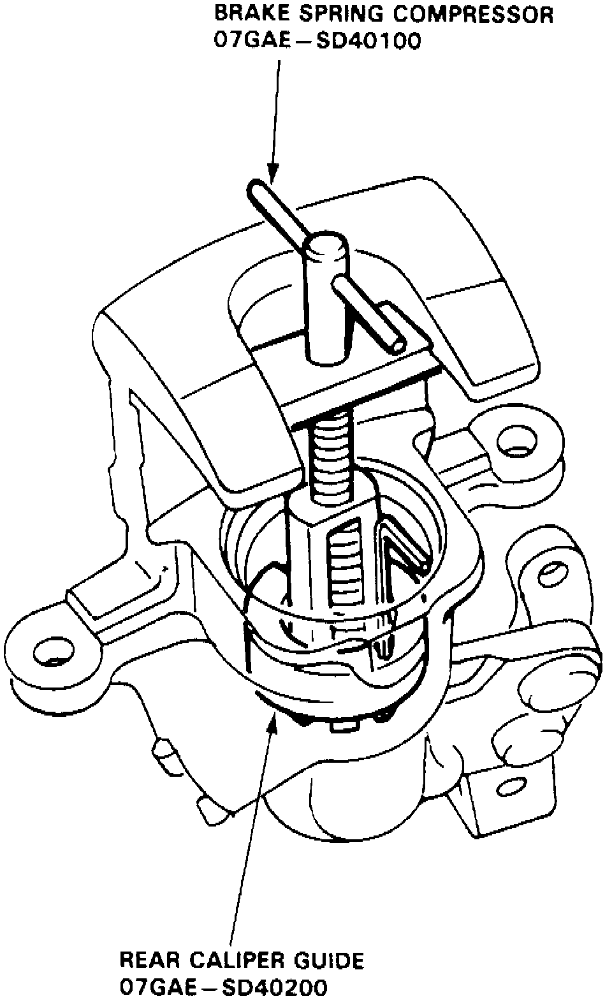

Assembly and Installation
1. Pack needle bearing with suitable grease.2. Apply suitable grease to cam boot, then install boot in caliper.
3. Install cam, ensuring hole in cam faces cylinder.
4. Install lever, spring washer and parking nut. Tighten nut to specifications, then install return spring.
5. Install rod in cam, then position new O-ring on sleeve piston or pushrod.
6. Install new cup with cup groove facing bearing side on adjusting bolt, then position bearing, spacer, adjusting spring and spring cover on adjusting bolt. Install adjusting bolt assembly into caliper cylinder.
7. Position suitable rear caliper guide tool in cylinder, ensuring cutout on tool aligns with tab on spring cover.
Fig. 11 Brake Spring Installation:

8. Install brake spring compressor tool, Fig. 11, and compress spring until tool bottoms out. Ensure rear caliper guide slides freely with spring.
9. Remove rear caliper guide tool and ensure flared end of spring cover is below circlip groove.
10. Install circlip, then remove spring compressor. Ensure circlip is properly seated in groove.
11. Apply suitable grease to new piston seal and piston boot, then install seal and boot into caliper.
12. Apply suitable grease to outer surface of piston, then install piston while rotating it clockwise.
13. Install pad spring in caliper.
14. Reverse removal procedure to install caliper.